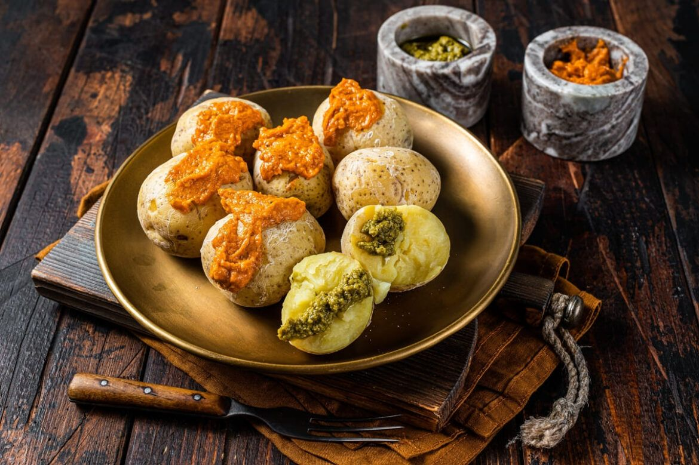
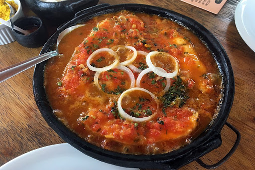
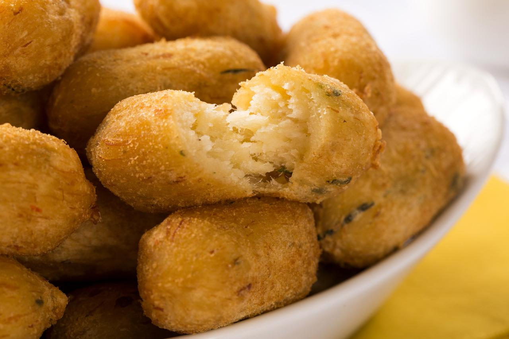
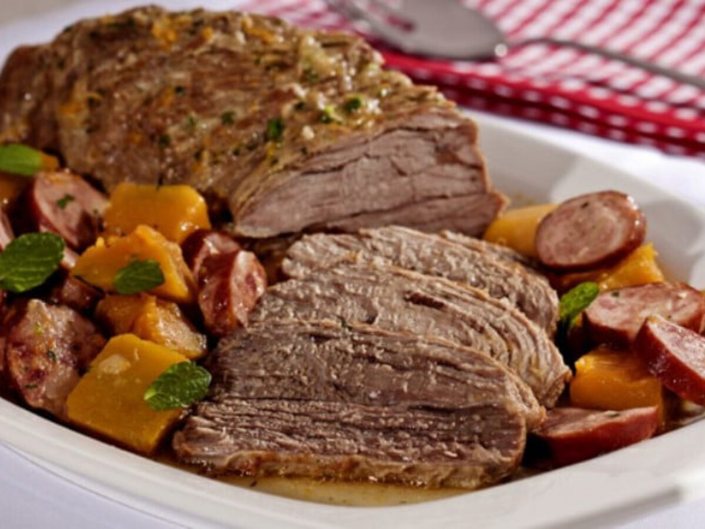

Bolinho de carne
Receita típica da culinária espanhola.
Pratos de petiscos
Arranjo de petiscos tradicionais de bares e botecos. Ideal para acompanhar bebidas.

Peixe ao molho capixaba
Carne de peixe com molho de tomate, cebola e pimenta vermelha

Bolinho de Peixe
Bolinhos de massa de mandioca e recheio de purê de carne de peixe.

Picanha com crosta de queijo
Deliciosa, no ponto e coberta com uma camada de queijo.

Carne assada tradicional
Carne assada no forno com ervas e temperos tradicionais.
Canelone Clássico
Prato de sobremesa tradicional e bem cremoso.
Salada tradicional
Uma salada básica, bem leve e temperada com óleo de oliva.
Salada com camarão
Ideal para uma entrada com uma pegada mais forte.

Torta Banoffee
Ideal para servir no lanche da tarde ou à noite.